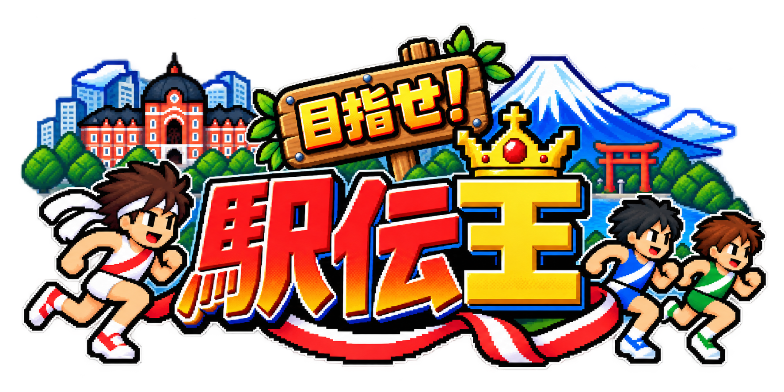

PROLOGUE — 20のたすき
冬の朝、スタートラインに
20色のたすきが集まった。
街をぬけ、坂をこえ、
仲間の想いをゴールへつなぐ。
先頭で風に立ち向かうか。
集団で力をためるか。
勝負を決めるのは、
最後まであきらめない一歩。
さあ、きみの番だ。
目指せ！駅伝王

リズムをきざめ。風をよめ。
さいごの一歩で、ぬけだそう！
20チーム ／ 全10区間 ／ 1区間 約2〜4分
冬の朝、スタートラインに
20色のたすきが集まった。
街をぬけ、坂をこえ、
仲間の想いをゴールへつなぐ。
先頭で風に立ち向かうか。
集団で力をためるか。
勝負を決めるのは、
最後まであきらめない一歩。
さあ、きみの番だ。
目指せ！駅伝王
ランナーを準備しています…
1区間から全10区間まで。街・海・山をつなぐ駅伝へ！
好きな色で、20チームの頂点をめざそう。
どの色でも、ランナーの強さは同じです。
はじめてなら EASY。なれたら強いライバルに挑戦！
少し遅いタップ（1秒に約2回）は温存ペース。速すぎる連打はスタミナを多く使います。先頭やひとりで走ると、向かい風で進みにくくなります。
スパートは体力30以上で使え、10秒で約40を消費。終了後は12秒の休みが必要です。もう一度押すと中止できます。
1区：集団で脚を残し、六郷橋の先で勝負。5区：上りは無理せず、最高点の先で切り替えよう。6区：下りのスパートは脚に負担。最後の平地に力を残そう。
PCでは A / L または ← / → で交互タップ、スペースでスパート、Escで一時停止。
左足からタップしてみよう！
交互で走る ／ ゆっくりで温存 ／ 指を休めて回復
00:00